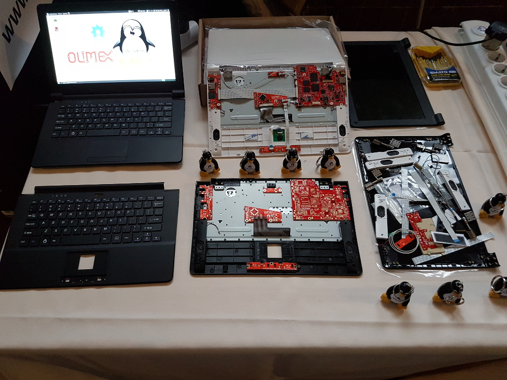

OLIMEX Teres-I (olimex-teres i)
| New device port in works by the community maintainer |
|
 The Odrysian King at FOSDEM2017 | |
| Manufacturer | OLIMEX |
|---|---|
| Name | Teres-I |
| Codename | teres_i |
| Model | Rev.C |
| Released | 12 Oct 2017 |
| Category | testing |
| Pre-built images | no |
| Original software | Android |
| postmarketOS kernel | linux-postmarketos-allwinner |
| Hardware | |
| Chipset | Allwinner A64 |
| CPU | 4x 1152 MHz Cortex-A53 |
| GPU | 600Mhz Mali-400 MP2 |
| Display | 1366x768 IPS (N11BGE-EA2 Rev.C3) |
| Storage | 16 GB eMMC (MTFC16GAKAENA-4M) + SDCard |
| Memory | 2GB DDR3L RAM (2x Hynix H5TC8G63AMR-PBA) |
| Architecture | AArch64 |
| Type | laptop |
| Unixbench Whet/Dhry score | 0.0 |
{kind=link}
| Flashing |
Works
|
|---|---|
| Touchscreen |
Works
|
| Display |
Works
|
| WiFi |
Works
|
| FDE |
Works
|
| Mainline |
Works
|
| Battery |
Works
|
| 3D Acceleration |
Works
|
| Audio |
Works
|
| Bluetooth |
Works
|
| Camera |
Works
|
| GPS |
Works
|
| Internal storage |
Works
|
| SMS |
Works
|
| Calls |
Works
|
| USB OTG |
Works
|
| NFC |
Works
|
| Accelerometer |
Works
|
|---|---|
| Magnetometer |
Works
|
| Ambient Light |
Works
|
| Proximity |
Works
|
| Barometer |
Works
|
| Power Sensor |
Works
|
| Keyboard |
Works
|
|---|---|
| Touchpad |
Works
|
| USB-A |
Works
|
| HDMI/DP |
Works
|
| Ir TX |
Works
|
| Ir RX |
Works
|
| Memory Card |
Works
|
| Ethernet |
Works
|
| FOSS bootloader |
Works
|
| Primary Bootloader |
Works
|
|---|---|
| Secondary Bootloader |
Works
|
| Mainline |
Works
|
| Internal Storage |
Works
|
| SD card |
Works
|
| USB Host |
Works
|
| USB Peripheral |
Works
|
| Display |
Works
|
| Keyboard |
Works
|
| Buttons |
Works
|
Engineers, Maintainers and Contributors
- Tsvetan Usunov -- Hardware Engineer and Supplier
- Dan Koloff -- Main Repository Maintainer
- Dimitar Gamishev -- The Linux Kernel Mainline and Hardware Engineer
- Lub -- Official Technical Support
- KREYREN -- Maintainer of Armbian, Debian GNU/Linux, Ubuntu, (Devuan GNU/Linux), NixOS, (GNU Guix GNU/Linux), PostmarketOS, (Alpine Linux), Parabola GNU/Linux, (Archlinux ARM). Contributor to The Linux Kernel
- JC Staudt -- Debian GNU/Linux Maintainer
- Milan P. Stanić -- Alpine Linux Maintainer
- Tom Hall (former) -- NixOS Maintainer
- Bill Auger -- Parabola GNU/Linux Maintainer
- Denis 'GNUtoo' Carikli -- Parabola GNU/Linux Maintainer
- Alexey Korepanov -- Gentoo Linux Maintainer
- Jeff Moe -- Engineer of 3D printable case
- Chris Boudacoff -- teres1-debug developer
- Torsten Duwe -- Linux kernel contributor who fixed ANX6345 power up sequence
- Harald Geyer -- Linux kernel contributor who reported issue with ANX6345
- (and many more!)
Users owning this device
Installation
Use pmbootstrap to build your own image.
Insert your desired sdcard in the build system and note it's device identifier (e.g. /dev/mmcblk1)
$ pmbootstrap init # vendor: olimex, device: teres_i
$ pmbootstrap install --fde --sdcard=/dev/your-sdcard-device
Disconnect the sdcard from your build system and insert it into a laptop, it's expected to boot.
Alternatively you can flash a pre-built images from ...
U-boot Updates
| WARNING: This process might result in a device that will not boot postmarketOS, make sure you understand how you might recover from this situation before proceeding!! |
# update-u-boot --board=teres_i --device=/dev/your-device
Updating teres_i u-boot in /dev/your-device in 3 seconds...
Completed successfully.
# sync
Serial console
Teres has a serial port in the headphone connector.
The default UART is 115200n8
The pinout for the serial connector on the headphone jack is:
TX RX
| |
=== == ====|||||||||---------
|
GND
The serial connection is 3.3V
You can also buy the debug cable from the supplier's web store or make one.
For instructions and firmware: https://github.com/d3v1c3nv11/teres1-debug
Storage
The SD card is /dev/mmcblk2 and the eMMC is /dev/mmcblk0
Booting
Teres boots using u-boot. The bootrom in the A64 soc will look for u-boot on the SPI flash chip, then the eMMC and then the SD card slot and It will boot the first functioning u-boot image it can find.
Booting from SD
To boot from the SD the SPI bootloader and eMMC bootloader need to be disabled. Then the SoC will fallback to a bootloader on the SD card so postmarketOS can be fully booted from SD.
Teres comes with an empty SPI chip from the factory so that doesn't need anything by default.
Booting from eMMC
To boot it from eMMC you have to overwrite the OS that's on the eMMC already. This is possible to do from an OS booted from SD with the steps above and then flashed on the eMMC using live system.
Fastboot mode is work-in-progress
Booting from SPI
TBD
Connecting to the WiFi
wpa_supplicant
Refet to the https://wiki.alpinelinux.org/wiki/Wi-Fi#wpa_supplicant.
Notes
Refer to the linux-sunxi.org wiki for more details about the device: https://linux-sunxi.org/Olimex_Teres-A64
Known issues with alpine/postmarketos
Only for distribution-relevant issues, for device-specific issue see the linux-sunxi wiki.
Disfunctional display when BL31.bin is compiled with SUNXI_SETUP_REGULATORS=0
The The Arm-Trusted-Firmware's BL31 is responsible for PMIC initialization that should be correctly printed in serial console as:
U-Boot SPL 2024.01 (Jan 18 2024 - 19:32:49 +0100) DRAM: 2048 MiB Trying to boot from MMC1 NOTICE: BL31: v2.10.0 (debug): NOTICE: BL31: Built : 01:25:38, Dec 4 2023 NOTICE: BL31: Detected Allwinner A64/H64/R18 SoC (1689) NOTICE: BL31: Found U-Boot DTB at 0x20a2d98, model: Olimex A64 Teres-I INFO: ARM GICv2 driver initialized INFO: Configuring SPC Controller INFO: PMIC: Probing AXP803 on RSB INFO: PMIC: aldo1 voltage: 2.800V INFO: PMIC: dcdc1 voltage: 3.300V INFO: PMIC: dcdc5 voltage: 1.500V INFO: PMIC: dcdc6 voltage: 1.100V INFO: PMIC: dldo1 voltage: 3.300V INFO: PMIC: dldo2 voltage: 2.500V INFO: PMIC: dldo3 voltage: 1.200V INFO: PMIC: dldo4 voltage: 3.300V INFO: PMIC: fldo1 voltage: 1.200V INFO: PMIC: Enabling DC SW INFO: BL31: Platform setup done INFO: BL31: Initializing runtime services INFO: BL31: cortex_a53: CPU workaround for erratum 843419 was applied INFO: BL31: cortex_a53: CPU workaround for erratum 855873 was applied INFO: BL31: cortex_a53: CPU workaround for erratum 1530924 was applied INFO: PSCI: Suspend is unavailable INFO: BL31: Preparing for EL3 exit to normal world INFO: Entry point address = 0x4a000000 INFO: SPSR = 0x3c9
If your U-Boot initializes with:
U-Boot SPL 2024.01 (Jan 20 2024 - 10:52:04 +0000) DRAM: 2048 MiB Trying to boot from MMC1 NOTICE: BL31: lts-v2.8.14(release): NOTICE: BL31: Built : 10:47:18, Jan 20 2024 NOTICE: BL31: Detected Allwinner A64/H64/R18 SoC (1689) NOTICE: BL31: Found U-Boot DTB at 0x20a2d98, model: Olimex A64 Teres-I
Then you likely need to review your BL31.bin's compilation logs for the presence of 'SUNXI_SETUP_REGULATORS=0 such as https://gitlab.alpinelinux.org/alpine/aports/-/merge_requests/59249/diffs#082488b14c7615f24feec8cd5916dfbd77c6a78d_41_41.
This issue affected alpine's u-boot <=2024.01-r2 and was addressed in:
- https://gitlab.alpinelinux.org/alpine/aports/-/merge_requests/59177
- https://gitlab.alpinelinux.org/alpine/aports/-/merge_requests/59249
- https://gitlab.alpinelinux.org/alpine/aports/-/commit/34e1f452115975ac88b04d3bbe0b75436a5b0f69
Troubleshooting
..
See also
- pmaports!4743 Initial merge request.
- aports!59177 Fixes for broken screen initialization on Alpine Linux.
- aports!59249 Fixes PMIC regulator initialization
- aports!34e1f4 Rebuilds u-boot with fixed atf dependency
- aports!/issues/15732 Adjustments to the Linux-lts/Edge kernel in alpine to support the device
- github:Kreyren/pmports-TERES Work repository for teres compatibility patches for alpine/pmos
- github.com/OLIMEX/DIY_LAPTOP Device Repository
- Olimex.com/Products/DIY-Laptop Products page
- linux-sunxi.org/Olimex_teres-A64 Sunxi wiki page about the device